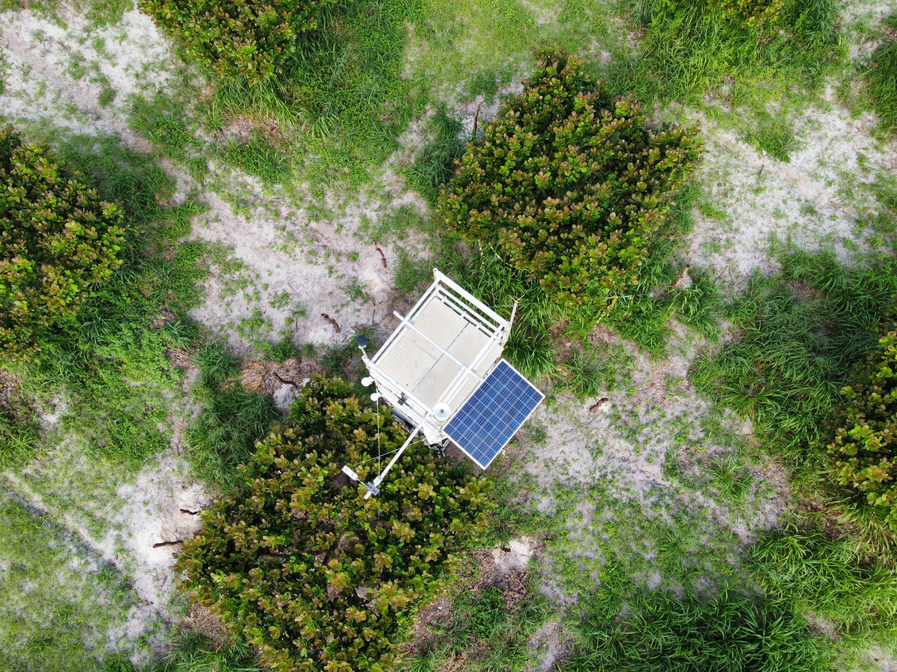

Caju, ambiente e carbono
Uma pesquisa que quantifica e compreende as interações entre o cultivo de caju, as condições ambientais e o ciclo do carbono.

Por que o CajuCarbo existe
O projeto CajuCarbo tem como objetivo determinar as emissões de gases do efeito estufa em sistemas de produção de caju, contribuindo para o Inventário Nacional de Emissões e apoiando a formulação de políticas ambientais e estratégias de mitigação de emissões em benefício da sociedade.
A cajucultura é uma atividade de grande importância econômica e social no Nordeste brasileiro. Compreender como esse sistema interage com o ambiente é essencial para orientar práticas mais sustentáveis.
Relações estudadas pelo projeto
O CajuCarbo observa continuamente a interação entre o cultivo e os componentes do ambiente.
Cultivo
O sistema de produção de caju e seu desenvolvimento ao longo do ciclo.
Atmosfera
As trocas gasosas entre o sistema de cultivo e o ambiente, incluindo o dióxido de carbono.
Solo
A umidade, a temperatura e o fluxo de calor armazenado no solo.
Água
O uso da água e a evapotranspiração do sistema de produção.
Carbono
As trocas líquidas de carbono e as emissões de gases de efeito estufa.
Condições ambientais
Temperatura, umidade, radiação, vento e precipitação.
O propósito da pesquisa
Determinar as emissões de gases do efeito estufa (GEE) em sistemas de produção de caju, destacando sua contribuição para o Inventário Nacional de Emissões e visando o auxílio à formulação de políticas ambientais e à proposição de estratégias de mitigação de emissões em sistemas de produção de caju em benefício da sociedade.